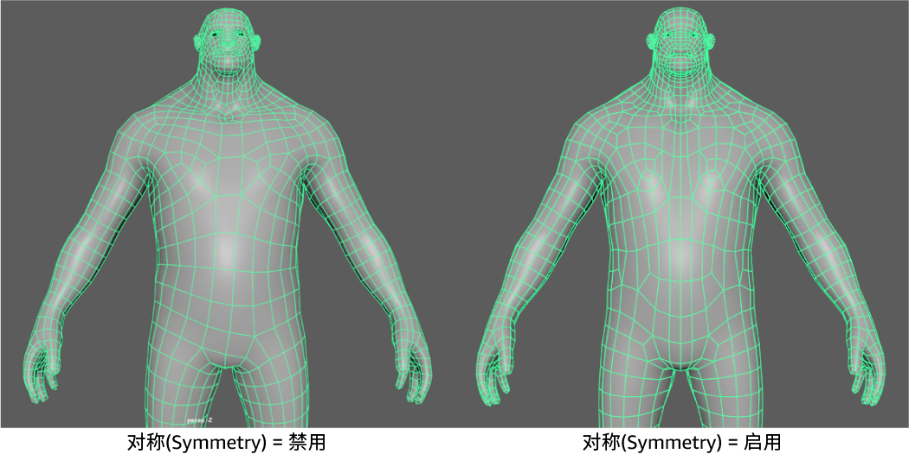
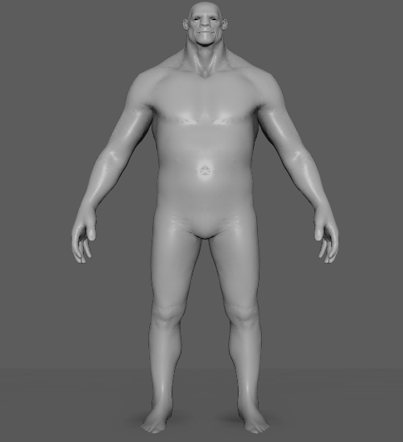

重新拓扑的对称选项允许您在网格的两侧创建均匀边流。在启用“对称”(Symmetry)的情况下运行“重新拓扑”(Retopologize)时，在运行算法之前，几何体将沿选定轴进行预剪切，以确保在网格的两侧均匀分布拓扑。
以下示例显示了在启用和不启用对称的情况下重新拓扑的网格。禁用对称后，即使拓扑不对称，生成的图形也会显示为对称。启用对称后，“重新拓扑”(Retopologize)将生成一条在任一侧具有均匀边流的真实中心线。

使用对称重新拓扑网格
- 选择网格。
重要： 您无法对半个网格执行重新拓扑。请参见重新拓扑限制。
- 准备重新拓扑网格。
- 选择“网格 > 重新拓扑”(Mesh > Retopologize) >
 。
。
- 在显示的“重新拓扑选项”(Retopologize Options)窗口中，设置以下选项：
- 对称(Symmetry)：启用
- 轴位置(Axis Position)：基于网格进行选择。在以下示例中，选择了“边界框”(Bounding Box)。
- 轴(Axis)：基于网格进行选择。在以下示例中，选择了“+X 到 -X”(+X to -X)。
- 单击“重新拓扑”(Retopologize)。
生成的网格在外观和边流方面都是对称的。在以下示例中，可以在重新拓扑运行后看到清晰的中心线。